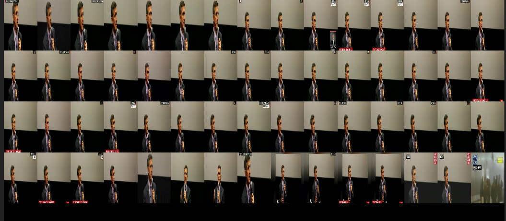
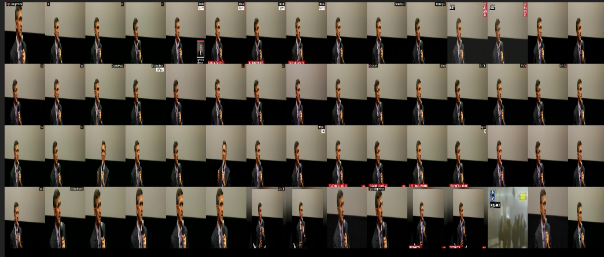

Lets get started with week-6
My mentor and I decided the tasks for this week given as :
- 1. Automating the results generation and the complete clustering task till now
- 2. Running the models in the crop version of the images
- 3. Starting with the image duplicacy
Section-1 Automating the results generation and the complete clustering task till now
The first task for this week was to automate the clustering task till the result generation step. My mentor suggested a great idea for the generation step, which is instead of saving the pdf of all the models let us save all text files containing the number of clusters found for(flynn, trump , khewsis ) for example and put a filter such as if the number of clusters are greater than 2200 and less than 30 , flynn clusters more than 5, trump clusters more than 4 and khwesis clusters more than 3 then not save the pdf.
The python script can be found here
https://github.com/Himani2000/GSOC_2020/blob/master/Image_clustering/image_results_utils.py
The automation of all the clustering methods can be found in this shell script,
https://github.com/Himani2000/GSOC_2020/blob/master/clustering-models/clustering_shell.sh
To my surprise out of around 120 models files , 3 passed the filter and those text and pdf files were:
1. text file:ideology_model_mobilenet-pca-tsne_dbscan_labels.txt
pdf file:ideology_model_mobilenet-pca-tsne_dbscan_labels.pdf
2. text file:ideology_model_resnet50-umap_dbscan_labels.txt
pdf file:ideology_model_resnet50-umap_dbscan_labels.pdf
3. text file:ideology_model_resnet50-umap_mean_shift_labels.txt
pdf file: ideology_model_resnet50-umap_mean_shift_labels.pdf
Section -2 Running the models in the crop version of the images
The main aim was to crop the headings from the images, since the heading comes at bottom we can simply cut some part from the bottom ,we crop 30 % of the image from bottom. In this way headings were removed from all the images.
The cropped version :
and the uncropped version:
As we can see the headlines are removed almost clearly on most of the images.
To my surprise NONE of the models passed the filter for the cropped images, this was not expected but we noticed that for the crop images the clusters were more sensitive .
The complete text files can be found at crop_concatenated_text_file.txt
Section -3 Starting with the image duplicacy
The aim was to try the image duplicacy methods to see if the same images are found. This is not directly related to image clustering but we thought to try this method to analyse the results.
Image duplicacy problems are solved using the image hashing techniques , in which perceptual hash algorithms describe a class of comparable hash functions. Features in the image are used to generate a distinct (but not unique) fingerprint, and these fingerprints are comparable. There are several image hashing algoritgms :
a) Average hashing (aHash)
b)Perceptual hashing (pHash)
c)Difference hashing (dHash)
d)Wavelet hashing (wHash)
The implementation of all these algorithms are provided in the imagehash library(python)
https://github.com/JohannesBuchner/imagehash
I came up with the two possible approaches 1)with and 2)Without threshold
1. In the first method , I simply computed the hash using the above mentioned hashing techniques and check if the hashes are similar then the images are similar (near duplicates )
For the normal images ::
ideology_image_dataset_avergae_hash.pdf
ideology_image_dataset_d_hash.pdf
ideology_image_dataset_p_hash.pdf
ideology_image_dataset_w_hash.pdf
For the cropped images ::
ideology_crop_image_dataset_avergae_hash.pdf
ideology_crop_image_dataset_d_hash.pdf
ideology_crop_image_dataset_p_hash.pdf
ideology_crop_image_dataset_w_hash.pdf
The code can be found here
https://github.com/Himani2000/GSOC_2020/blob/master/Image_hashing/image_hashing.py
2.I did not find the results good as some are too sensitive i.e exact duplicates so I went with the second method that is the image hashing with the threshold, which is more like a image search engine technique, basically I computed the image hashes for all the images , then arrange them in the tree manner (VP-tree) to make the run time complexity from linear (O(n)) to O(logn). Then I pass the query image, computed the hash for the query image and pass the threshold (hamming distance ) that searches upto that distance in the vp-tree, the hamming distance is the number of bits that differes in both the hashes
Testing the model in the cropped images
Suppose I pass one of the images of flyn as a query images , I passed the threshold as 12 (hamming distance) then I got :
1. For the ahash

2.For the phash
resulted images less than 10 :(
3.For the dhash
resuled images less than 10 :(
4. For the whash
